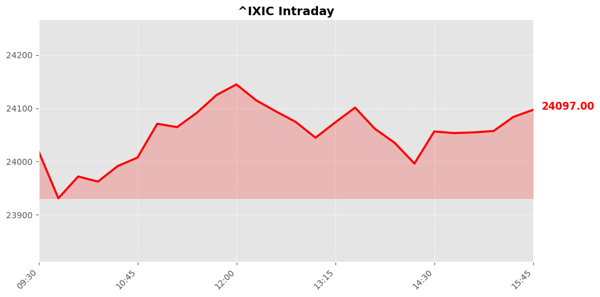
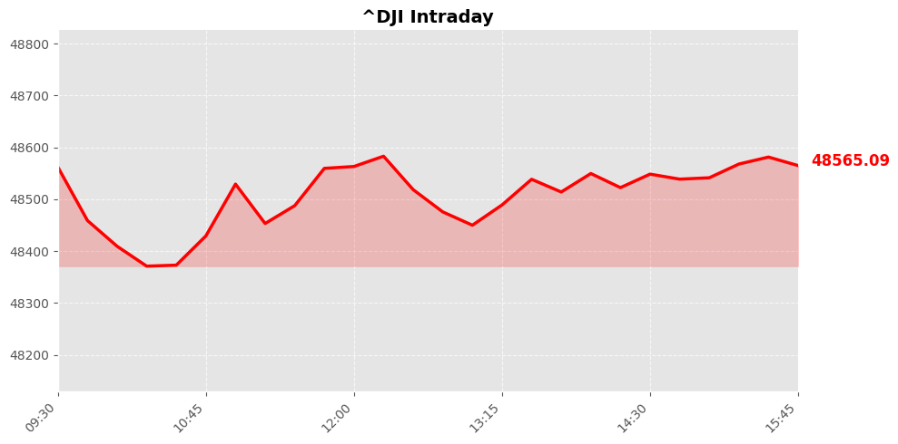
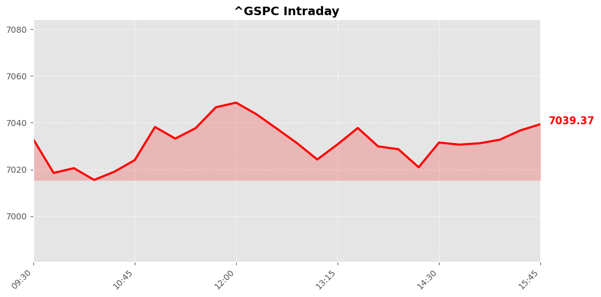

Daily Market Briefing
Market Overview



Market Analysis
The recent market performance reflects a cautiously optimistic sentiment across major U.S. equity indices. The NASDAQ Composite, closing at approximately 24,102.7 points, gained 86.68 points or 0.36%, signaling continued investor confidence in the technology and growth sectors. This upward movement suggests that market participants remain optimistic about innovation-driven companies, possibly buoyed by positive earnings reports or favorable macroeconomic indicators.
The Dow Jones Industrial Average increased by 115.0 points, reaching around 48,578.72, a rise of 0.24%. This modest gain indicates steady confidence in large-cap industrial and financial stocks, likely supported by resilient economic data and stable corporate earnings. The Dow’s performance often reflects broader economic health, and its positive movement suggests that investors remain aligned with expectations of ongoing economic stability.
Meanwhile, the S&P 500, closing at approximately 7,041.28, advanced by 18.33 points, or 0.26%. This broad-market index’s growth underscores a balanced recovery across multiple sectors, reflecting a cautious but positive risk appetite among investors.
Overall, the market trend points to a phase of moderate gains driven by continued economic optimism and sector-specific strengths. The sentiment appears to be supported by stable macroeconomic conditions, with investors maintaining a risk-on posture despite ongoing geopolitical or inflation-related concerns. While the gains are modest, they collectively indicate a resilient market atmosphere, with investors cautiously optimistic about sustained growth and corporate profitability.
Today's Headlines
News Analysis
Certainly. Here's a comprehensive analysis based on the recent financial news, structured into the main market focus points, potential impact factors, and industry trends:
1. Main Market Focus Points Today
Geopolitical Tensions and Military Developments:
The ongoing Iran-related tensions dominate headlines, with the US delaying weapons deliveries to European allies and discussions around Iran's threat level intensifying. Political figures like Trump emphasizing Iran as a global threat and discussions around Iran's potential influence on international stability are heightening geopolitical uncertainty, which typically exerts upward pressure on safe-haven assets and volatility in equities.
US Political and Legislative Dynamics:
The US political landscape appears volatile, with recent headlines indicating partisan resistance in Congress to limiting presidential war powers regarding Iran. This political gridlock could influence market perceptions of US foreign policy stability, potentially impacting defense and related sectors.
Technology and AI Innovation:
Google's integration of user photos with its Gemini chatbot signals ongoing advancements in AI, especially in personal data linkage. This innovation could foster growth in the tech sector, though concerns over privacy and regulation may temper enthusiasm.
Financial Sector and Market Sentiment:
Discussions about Federal Reserve leadership, with Kevin Warsh's nomination and the scrutiny over financial disclosures, reflect ongoing debates about monetary policy direction. Additionally, comments from industry leaders like Marc Rowan highlight rising tensions in private credit markets, signaling potential stress points in credit valuation and liquidity.
Earnings Season and Corporate Outlooks:
European companies are facing uncertainties stemming from Iran conflict fears, as earnings reports reveal the early impact of geopolitical risks. These developments could influence European stock performances and investor sentiment.
2. Potential Market Impact Factors
Geopolitical Uncertainty:
The Iran conflict and US political stances on war powers could cause increased volatility, especially in defense, energy, and financial sectors. Any escalation or de-escalation may lead to rapid market adjustments.
Policy and Regulatory Risks in Tech:
Google’s AI developments could stimulate growth in the tech sector but also trigger regulatory scrutiny, possibly affecting valuations and strategic investments.
Monetary Policy Expectations:
Uncertainty around Fed leadership and policy outlooks may influence bond yields and equity valuations, particularly if market participants anticipate shifts in interest rate trajectories or monetary easing.
Market Liquidity and Credit Risks:
Rising redemption requests and outspoken industry leaders suggest tightening liquidity conditions in the private credit market, which could cascade into broader financial stability concerns.
3. Industry Trends Worth Noting
Geopolitical and Defense Sector:
The escalation of Iran-related tensions is likely to sustain increased defense spending globally, benefiting aerospace and defense firms. Additionally, energy markets may experience volatility due to potential disruptions or escalations.
Artificial Intelligence and Data Privacy:
Advancements in AI, exemplified by Google’s integration with personal data, underscore a trend toward more personalized digital experiences. However, this is coupled with mounting privacy concerns and regulatory debates, shaping a complex landscape for tech companies.
Financial Sector Resilience and Regulation:
The debate over Federal Reserve leadership and the health of private credit markets indicate ongoing scrutiny of financial regulation and risk management practices. The sector may see increased regulatory oversight and shifts in investor risk appetite.
European Corporate Outlook:
European earnings are beginning to reflect the economic impact of geopolitical tensions, suggesting a cautious outlook for the region’s corporate profitability and investment climate.
In summary, today's market environment is heavily influenced by geopolitical risks, monetary policy uncertainties, and technological innovations. Investors should remain vigilant to potential volatility, especially in defense, energy, and financial sectors, while monitoring regulatory developments and earnings signals for longer-term trends.
Would you like a more detailed sector analysis or specific investment implications?
Economic Indicators
Inflation Indicators
Employment Indicators
Consumer Indicators
Community Hot Stocks
| Rank | Symbol | Mentions | Source |
|---|---|---|---|
| 1 | NFLX | 127 | |
| 2 | HIT | 81 | |
| 3 | AMD | 67 | |
| 4 | BULL | 66 | |
| 5 | PUMP | 60 | |
| 6 | FACT | 59 | |
| 7 | VS | 56 | |
| 8 | CARE | 52 | |
| 9 | TURN | 47 | |
| 10 | LUCK | 47 | |
| 11 | MSFT | 46 | |
| 12 | NVDA | 43 | |
| 13 | NET | 42 | |
| 14 | BEAT | 37 | |
| 15 | TFSA | 35 | |
| 16 | AIN | 34 | |
| 17 | PLUS | 32 | |
| 18 | WTF | 31 | |
| 19 | TSM | 30 | |
| 20 | PRE | 29 |
Market Outlook
In the short term, the market exhibits a cautiously optimistic tone, reflected by modest gains across major indices—NASDAQ, Dow Jones, and S&P 500—each rising approximately 0.24% to 0.36%. This indicates investor resilience amid geopolitical tensions and macroeconomic uncertainties.
The recent news cycle underscores heightened geopolitical risks, notably tensions surrounding Iran and US-European relations. The US delaying weapons deliveries to some European countries signals potential escalation, which could introduce volatility if geopolitical conflicts intensify. Additionally, comments from Trump emphasizing Iran as a global threat and discussions of a possible visit to Islamabad suggest ongoing geopolitical maneuvering, which can impact market sentiment.
On the positive side, the G7 finance leaders' readiness to act to mitigate the fallout from Iran-related tensions provides a counterbalance, hinting at coordinated efforts to stabilize markets. The relatively subdued market movement suggests that investors are currently balancing geopolitical risks with underlying economic resilience.
Key risk factors to monitor include: - Escalation of Iran-related conflicts, which could trigger risk-off sentiment. - US political developments and policy signals, especially regarding foreign relations. - Global economic data releases that might influence risk appetite.
Investment focus should be on: - Defensive sectors such as utilities, healthcare, and consumer staples, which tend to outperform in uncertain environments. - Monitoring geopolitical headlines closely for signs of escalation or de-escalation. - Maintaining a cautious stance with diversified holdings to navigate potential volatility.
In summary, the near-term market outlook remains cautiously optimistic, but ongoing geopolitical developments warrant vigilance. Investors should prioritize risk management and stay alert to evolving macro and geopolitical cues to navigate potential turbulence effectively.
Follow Us

Scan to follow StockGate
For more US stock market insights